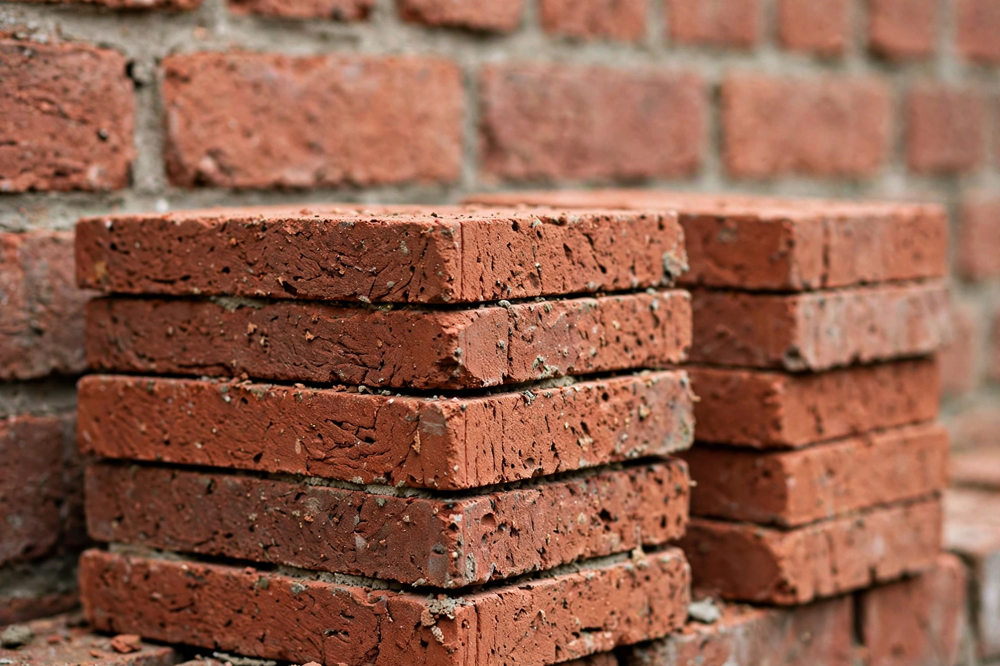

A brick is a type of construction material used to build walls, pavements and other elements in masonry construction. Traditionally, the term referred to a rectangular unit composed of clay, but it is now used more generally to denote any rectangular laid unit.

Sun-dried mudbricks date to at least 7500 BCE in the Fertile Crescent; fired bricks were used in Indus Valley and ancient Rome. The Great Wall of China and Roman brickwork show durability.
Clay, shale, concrete, or calcium silicate is moulded, dried, and fired in a kiln. Modern production is extruded and wire-cut. Types include engineering, facing, fly ash, and fire bricks.
Laid in courses with mortar by a bricklayer. See Masonry, Concrete block.